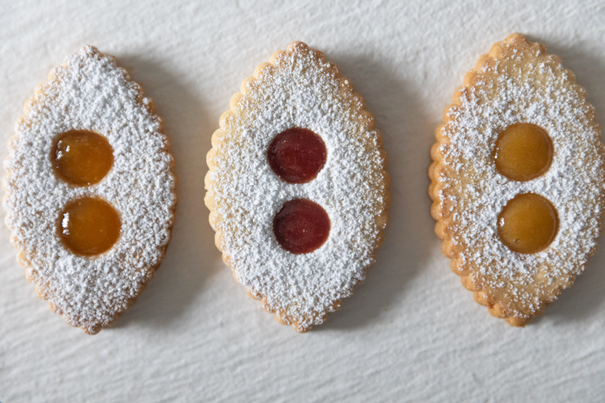
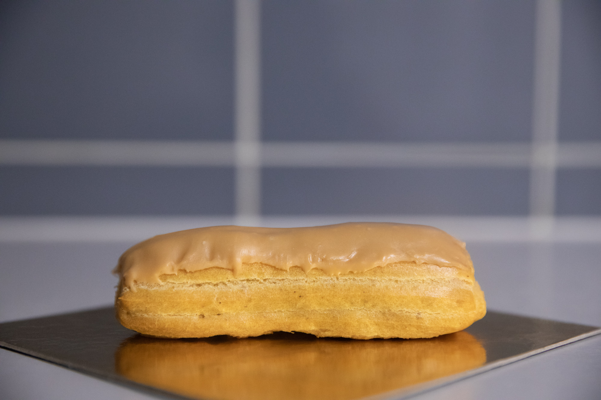
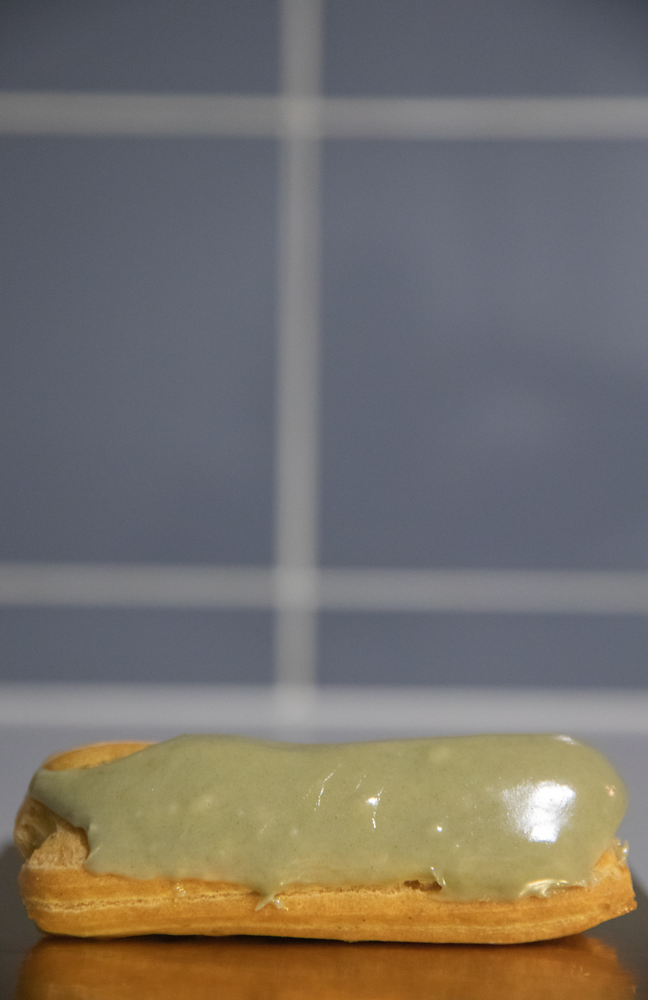
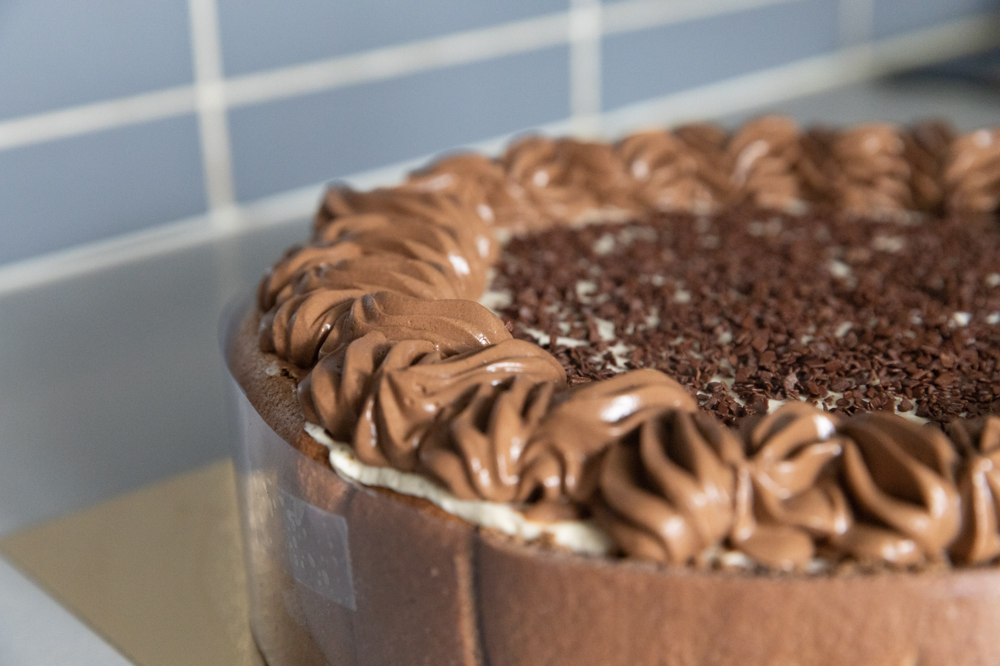

NOS PÂTISSERIES
-
NOUVEAU

BABKA AU GIANDUJA
Gianduja origine 100% Italie avec noisettes du Piémont bio
Une brioche de 25 cm riche en beurre renfermant un généneux fourrage. La brioche est également proposée fourée à la canelle, au confit de fruits rouges (seulement l’été) et pistache / chocolat blanc.
-
NOUVEAU
LUNETTES AUX FIGUES ET ABRICOTS
DE SAISON
Vendus par six : trois à la figue et trois à l'abricot
Lunettes inspirée de la spécialité de la ville de Romans-sur-Isère. Deux biscuits sablés à la vanille entourant un délicat confit d'abricots ou de figues et saupoudré d'un généreux voile de sucre glace.
-
NOUVEAU
FINANCIERS
Fins gâteaux à la forme d'un lingot d'or avec du beurre clarifié et de l'amande torréfiée
Ces gateaux raffinés, vendus par huit, sont riches en goût et sont déclinés en moults variétés :
- Framboise
- Nature
- Chocolat
- Marbré chocolat
- Marbré framboise
- Pralin
- Gianduja
-
NOUVEAU
FRAISIER
DE SAISON
Fraises, crème diplomate à la pistache et biscuit joconde
Habituellement cantonné à une crème mousseline grasse et lourde, nous avons fait le choix de rendre le fraisier léger comme l'air mais toujours aussi délicieux.
-
NOUVEAU
COOKIES
Le biscuit culte des États-unis est disponible dans notre boutique
Chocolat noir / chocolat blanc. Chocolat blanc / canneberge. Chocolat au lait / noisette. Caramel / noix de cajou. Nos choix sont nombreux mais toujours délicieux.
-
NOUVEAU
- 
- 
ÉCLAIR
Pâte à choux ontueuse, fourrage généreux et nappage au fondant blanc
-
NOUVEAU
ENTREMET CHOCO-VANILLE
Délicat crémeux vanille, insert à la mousse de chocolat noir
NOTRE PHILOSOPHIE
Depuis ses débuts, notre pâtisseries s’efforce d’appliquer une éthique aussi bien dans notre façon de travailler, le choix de nos fournisseurs ainsi que dans l’accueil de vous : nos clients. Ouverte depuis 2020, nos locaux proposent désormais un espace salon de thé qui permettent de déguster vos achats sur place ainsi que de bénéficier d’eau, de café, de chocolat chaud et de thé gratuitement.
Au-delà de tout ça, nous croyons à la prochaine génération de pâtissiers et de pâtissières, c’est pour cela que nous avons signé récemment un partenariat avec le lycée professionnel de la ville, dans le but de prendre en alternance, chaque année deux apprentis en CAP Pâtisserie qui auront l’occasion d’apprendre de notre savoir-faire et ainsi proposer les meilleures prestations possibles, une fois insérés dans le monde du travail.
ORIGINE DE NOS PRODUITS*
*Liste non exhaustive
| NOM | PAYS | ISSU DE L'AGRICULTURE BIOLOGIQUE | FOURNISSEUR |
|---|---|---|---|
| Pistache | Iran | Non | Oui |
| Cacao | Venezuela | Oui | Rhonoea |
| Noisettes | Italie | Oui | Piémont Import SARL |
| Noix | France (Dordogne) | Oui | Noix France Gros |
| Lait (entier) | France (Normandie) | Oui | Gros lactier |
| Beurre | France (Bretagne) | Oui | Gros lactier |
| Pommes (variété Jonagold) | France (Ile-de-France) | Non | Verpommes |
| Noix de pécan | États-Unis d'Amérique (Californie) | Non | Deez Nuts |
| Citron / Cédrat | Italie (Sicile ou Sardaigne) | Non | Lima Import |
| NOM | PAYS | ISSU DE L'AGRICULTURE BIOLOGIQUE | FOURNISSEUR |